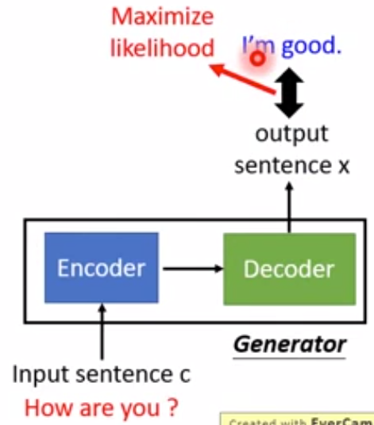
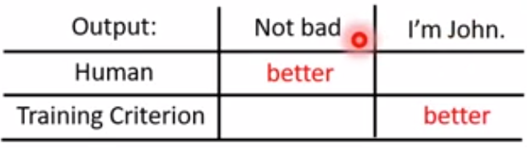
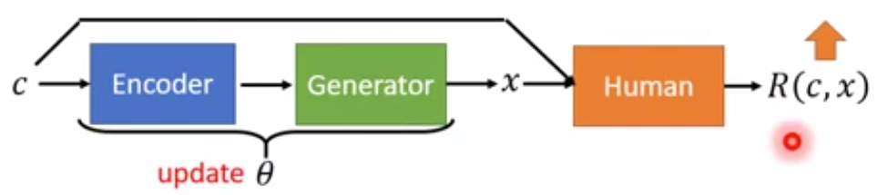
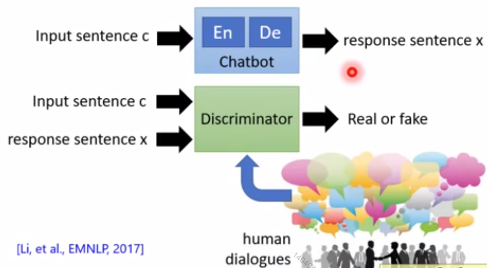
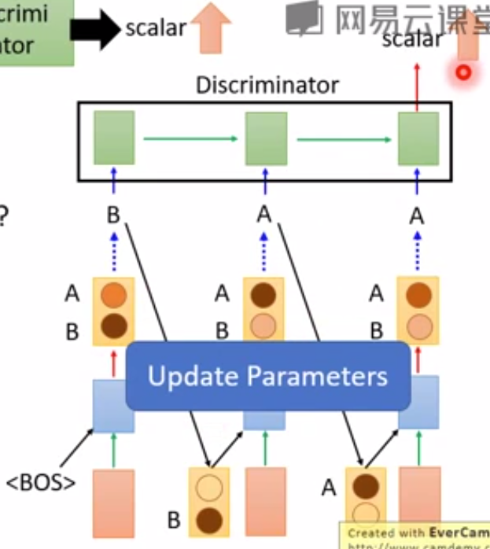
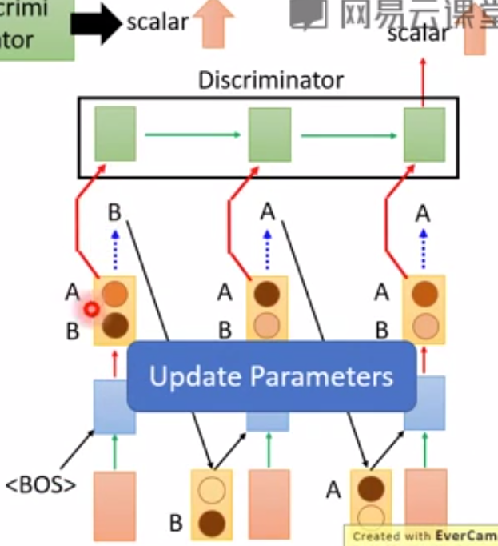
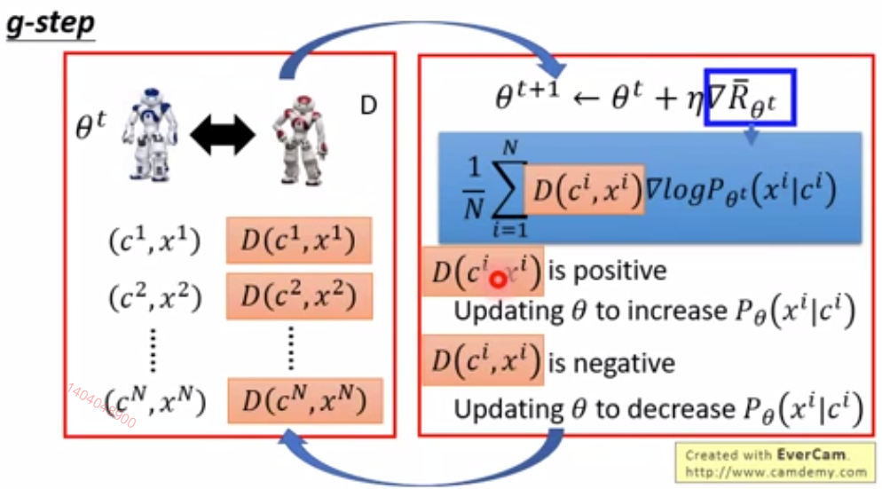
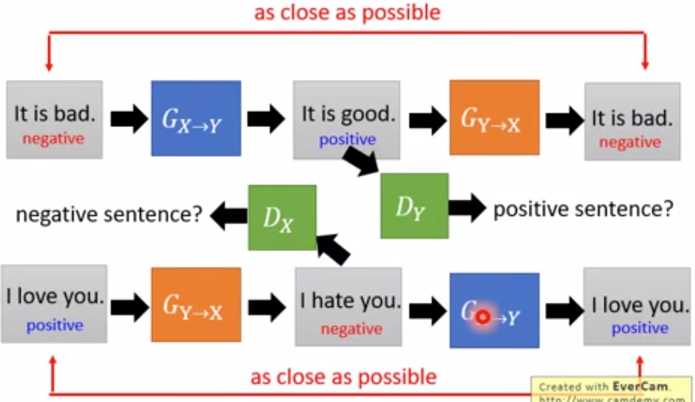
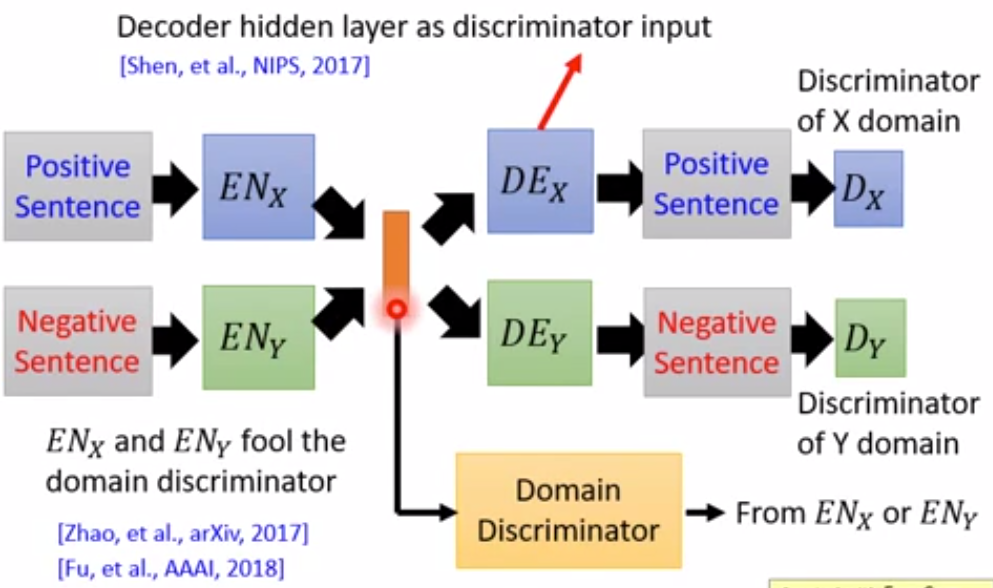
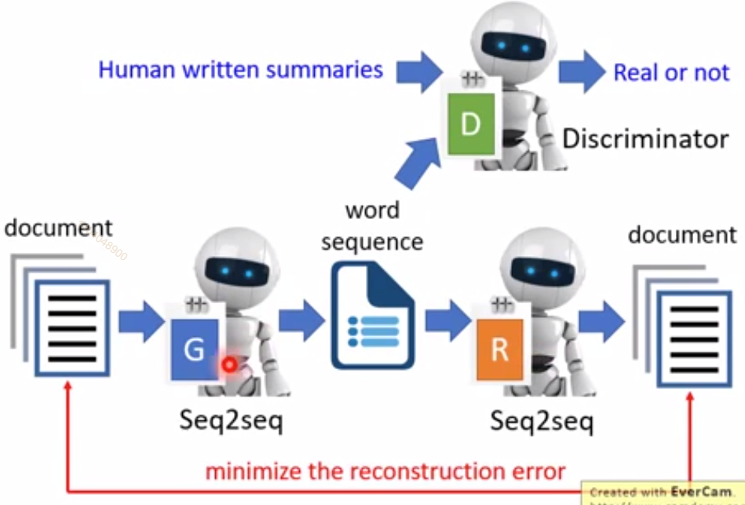

条件序列生成，例如：文字转语音、翻译、Chatbot
可以用传统的seq2seq解决，也可以用GAN解决。
以Chatbot为例，seq2seq的做法是：

这种方法存在的问题：

对于How are you这样的提问，通常的回归是I'm fine。如果回答Not bad也是可以的。但使用最大似然方法，机器会认为I'm John比Not bad更合适。
1. 条件序列生成的技术
1.1. 技术一：Reinforcement Learning
1.1.1. 复习一下policy Gradient

R¯θ=c∑P(c)x∑R(c,x)Pθ(x∣c)
公式中的符号定义如下：
θ：参数，在这些为固定值
Rˉθ：reward的期望
∑c： 遍历所有可能的condition
P(c)：某个condition出现的几率
∑x：遍历所有可能的action
R(c, x)：condition条件下某个action的reward
Pθ(x∣c)：given θ和c时回应为x的几率
目标：调θ∗，让Rˉθ最大:
R¯θ=Ec∈P(c),x∈P(θ∣c)[R(c,x)](1)
公式（1）中的c∈P(c),x∈P(θ∣c)无法穷举所有的以(c, x)，因此用sample的(c1, x1), ..., (cm, xm)代替：
R¯θ≈N1i∑R(ci,xi)(2)
公式（2）中已经没有了参数θ，θ完全体现在了sample的数据中了。
下一步工作是计算Rˉθ对θ偏导，这种情况就没法做偏导了。
解决方法：
先对公式（1）求偏导，然后再代入sample：
R¯θ=Ec∈P(c),x∈P(θ∣c)[R(c,x)∇logPθ(x∣c)](3)
sample代入公式（3）得：
R¯θ≈N1i∑R(ci,xi)∇logPθ(xi∣ci)(4)
更新效果：
θ←θ+η∇R¯θ
如果R(ci,xi)>0，则Pθ(xi∣ci)↑
如果R(ci,xi)<0，则Pθ(xi∣ci)↓
每次更新过θ后要重新sample data
1.1.2. 最大似然法 VS 增强学习法
|
Maximum Likelihood |
Reinforement Learning |
目标函数
Objective Function |
N1∑ilogPθ(xi∣ci) |
N1∑iR(ci,xi)logPθ(xi∣ci) |
| Gradient |
N1∑i∇logPθ(xi∣ci) |
N1∑iR(ci,xi)∇logPθ(xi∣ci) |
| Training Data |
已有的标记数据 |
每次迭代之后sample的数据 |
1.2. 技术二：GAN
RL是由人给feedback，GAN则是由D给feedback

D的output就是reward。
训练数据集：正确的(c, x)
训练步骤：
- 初始化G（chatbot）和D
- 从database sample出正确的(c, x)
- 从database sample出c'，计算x~=G(c′)
- 更新D，使得(c,x)↑，(c′,x~)↓
- 更新G（chatbot），使得(c′,x~)↑
其中G是一个seq2seq：

这里会有一个问题：此过程包含sampling，无法微分
解决方法：
- Gunbel-softmax，一个数学trick
- Continuous Input for Doscriminator，避开sampling，把distribution交给D。此方法需要结合WGAN。

- Reinforcement Learning，把R换成D

nablaR¯θ≈N1D(ci,xi)∇logPθ(xi∣ci)logPθ(ci,xi)=logP(x1i∣ci)+logP(x2i∣ci,x1i)+logP(x3i∣ci,x1i,x2i)(5)(6)
假如提问：ci = What's your name?
回答：xi = I don't known.
这个回答不合适，给了negative的reward，因此公式（6）中的每一项中的概率都要下降。
但其实第一项P(x1i=I∣ci)不应该下降，这个句子回答可以以I开关。
理论上，这不是一个问题，因为只要sample的次数足够多，会出现“I am John”这样的case把P(x1i=I∣ci)拉起来。
但实际上，这是一个问题，因为sample的次数永远都不会足够多。
解决方法：
∇R¯θ≈N1i∑t∑(Q(ci,x1:ti)−b)∇logPθ(xti∣ci,x1:ti)
其中Q(ci,x1:ti)−b为对每个timestep做evaluation。
1.2.1. MLE VS GAN
MLE：喜欢回答I'm sorry或I' don't known这样通用的句子。这种回答对应于MLE图像生成算法中的模糊影像。
GAN：会生成更长更复杂的句子。但不一定更好。
2. 条件序列生成的应用
2.1. 应用一：Text Style Transfer
例如：
音频：男声转女声
文本：positive转negative
2.1.1. 方法一：直接transfer

2.1.2. 方法二： projection to common space

2.2. 应用二：摘要提取
2.2.1. 方法一
输入一篇文章，判断每个句子的重要性。
把重要的句子连起来就是这篇文章的摘要。
缺点：句子拼凑起来的摘要不好，要自己产生句子。
2.2.2. 方法二：seq2seq
输入大量的（文章，摘要）对，训练一个seq2seq
缺点：需要大量的labelled data，百万级别
2.2.3. 方法三：风格迁移
把文章和摘要看成是两种风格(domain)的文本。
只需要准备一堆文章和一堆摘要，而不需要文章和摘要有什么关系。

D用于保证生成出来的东西是摘要。
R用于保证生成出来的东西与输入有关。
Note：
先用非监督学习训练，再用labelled data做fine tune。
只需要少量的labelled data就可以得到与监督学习一样的效果。
2.3. 应用三：机器翻译
把不同的语音视为不同的domain
也可以用于语音识别，把语音和文字视为不同的domain